足 をドロップするmob一覧
一覧ページへ
| 斧骸骨戦士 | アンデット | 一般1 | |||||||
|---|---|---|---|---|---|---|---|---|---|
 | 両手剣(410) | 鈍器(270) | 矢(410) | 足(230) | 槍投擲機(210) | 帰還(160) | 鎌(410) | 魔弾(410) | |
| 攻撃骸骨戦士 | アンデット | 一般2 | |||||||
 | 両手剣(380) | ステッキ(250) | 盾(380) | 足(210) | 槍投擲機(190) | 帰還(150) | 鎌(380) | ||
| 骸骨狂戦士 | アンデット | 一般3 | |||||||
 | 両手剣(360) | 鈍器(240) | 矢(360) | 足(200) | 槍投擲機(180) | 帰還(140) | 鎌(360) | 魔弾(240) | |
| 死の斧 | アンデット | セミ1 | |||||||
 | 両手剣(390) | ステッキ(260) | 盾(390) | 足(220) | 槍投擲機(200) | 帰還(160) | 鎌(390) | ||
| 地獄の斧 | アンデット | ボス1 | |||||||
 | 両手剣(470) | 鈍器(310) | 盾(470) | 足(260) | 槍投擲機(240) | 帰還(190) | 鎌(470) | ||
| グール | アンデット | 一般2 | |||||||
 | 投擲(380) | スリング(250) | イベント(380) | 足(210) | 爪(190) | 帰還(150) | |||
| ルナティック | アンデット | 一般2 | |||||||
 | スリング(380) | ステッキ(250) | 弾(380) | 足(210) | 首(190) | ブローチ(130) | |||
| アライブコープス | アンデット | ボス1 | |||||||
| 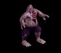 | スリング(470) | ステッキ(310) | 鍵(50) | 足(260) | 首(240) | ブローチ(160) | |||
| 原始人 | 人間 | 一般3 | |||||||
 | 笛(360) | 牙(240) | 状態異常回復1(360) | 足(200) | 槍投擲機(180) | 十字架(70) | 双剣(240) | ||
| 呪術者 | 人間 | ボス1 | |||||||
 | 笛(470) | 牙(310) | 状態異常回復1(470) | 足(260) | 槍投擲機(240) | 十字架(90) | 双剣(310) | ||
| オーク | 人間 | 一般3 | |||||||
| 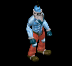 | 鈍器(360) | 牙(240) | 弾(360) | 足(200) | 冠(180) | 帰還(140) | 双剣(240) | ||
| ジャイアント | 人間 | セミ1 | |||||||
 | 鈍器(390) | 牙(260) | HP回復(390) | 足(220) | 首(200) | 能力向上1(160) | 双剣(260) | ||
| キクロップス | 人間 | セミ1 | |||||||
 | スリング(390) | 杖(260) | 弾(390) | 足(220) | 爪(200) | 帰還(160) | 本(260) | ||
| コロッサス | 人間 | ボス1 | |||||||
 | 鈍器(470) | 牙(310) | HP回復(470) | 足(260) | 指輪(240) | 能力向上1(190) | 双剣(310) | ||
| チタン | 人間 | ボス1 | |||||||
 | スリング(470) | 杖(310) | 弾(470) | 足(260) | 冠(240) | 帰還(190) | 本(310) | ||
| ラットマン | 悪魔 | 一般1 | |||||||
 | 投擲(410) | 笛(270) | 弾(410) | 足(230) | 指輪(210) | 帰還(160) | |||
| ワーラット | 悪魔 | 一般2 | |||||||
 | 投擲(380) | ステッキ(250) | 矢(380) | 足(210) | 槍投擲機(190) | 帰還(150) | 魔弾(380) | ||
| ラティアン | 悪魔 | 一般3 | |||||||
 | 投擲(360) | 笛(240) | 弾(360) | 足(200) | 手首(180) | 帰還(140) | |||
| ラットシーフ | 悪魔 | 一般4 | |||||||
 | 投擲(300) | ステッキ(200) | 矢(300) | 足(170) | 槍投擲機(150) | 能力向上2(120) | 魔弾(300) | ||
| ラットキング | 悪魔 | ボス1 | |||||||
 | 投擲(470) | 笛(310) | 弾(470) | 足(260) | 冠(240) | 能力向上1(190) | |||
| バフォメット | 悪魔 | ボス3 | |||||||
| 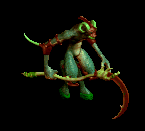 | 槍(510) | 鞭(340) | cP回復(510) | 足(280) | 槍投擲機(260) | 特殊1(200) | 箒(510) | ||
| ストーンオブザー | 悪魔 | セミ2 | |||||||
 | none(420) | 弓(280) | 矢(420) | 足(230) | 冠(210) | 特殊1(170) | 銃(280) | 魔弾(420) | |
| ストーンキーパー | 悪魔 | ボス2 | |||||||
 | none(490) | 片手剣(330) | 鍵(490) | 足(270) | 爪(250) | 宝石(200) | クロー(330) | ||
| クラブシェル | 動物 | 一般1 | |||||||
 | 投擲(410) | 両手剣(270) | 盾(410) | 足(230) | 爪(210) | 帰還(160) | 鎌(270) | ||
| ビッグクラブ | 動物 | 一般2 | |||||||
 | 投擲(380) | 両手剣(250) | 状態異常回復1(380) | 足(210) | 指輪(190) | 能力向上2(150) | 鎌(250) | ||
| サイドウォーカー | 動物 | 一般3 | |||||||
 | 投擲(360) | 両手剣(240) | 盾(360) | 足(200) | 爪(180) | 宝石(140) | 鎌(240) | ||
| キングクラブ | 動物 | セミ1 | |||||||
 | 投擲(390) | 両手剣(260) | 状態異常回復1(390) | 足(220) | 指輪(200) | 帰還(160) | 鎌(260) | ||
| 殺人蚊の群れ | 動物 | 一般3 | |||||||
 | 笛(360) | 翼(240) | イベント(360) | 足(200) | イヤリング(180) | 帰還(140) | 水晶(240) | ||
| ダイアーウルフ | 動物 | セミ2 | |||||||
 | 牙(420) | 鈍器(280) | cP回復(420) | 足(230) | 槍投擲機(210) | 特殊1(170) | 双剣(420) | ||
| ブラウンベアー | 動物 | 一般4 | |||||||
 | 牙(300) | 笛(200) | HP回復(300) | 足(170) | 爪(150) | 宝石(120) | 双剣(300) | ||
| 斧骸骨戦士Ex | アンデット | 一般1 | |||||||
| 両手剣(410) | 鈍器(270) | 矢(410) | 足(230) | 槍投擲機(210) | 帰還(160) | 鎌(410) | 魔弾(410) | |
| 攻撃骸骨戦士Ex | アンデット | 一般2 | |||||||
| 両手剣(380) | ステッキ(250) | 盾(380) | 足(210) | 槍投擲機(190) | 帰還(150) | 鎌(380) | ||
| 骸骨狂戦士Ex | アンデット | 一般3 | |||||||
| 両手剣(360) | 鈍器(240) | 矢(360) | 足(200) | 槍投擲機(180) | 帰還(140) | 鎌(360) | 魔弾(360) | |
| 死の斧Ex | アンデット | セミ1 | |||||||
| 両手剣(450) | ステッキ(300) | 盾(450) | 足(250) | 槍投擲機(230) | 帰還(180) | 鎌(450) | ||
| 地獄の斧Ex | アンデット | ボス1 | |||||||
| 両手剣(1200) | 鈍器(800) | 盾(1200) | 足(670) | 槍投擲機(600) | 帰還(480) | 鎌(1200) | ||
| グールEx | アンデット | 一般2 | |||||||
| 投擲(380) | スリング(250) | イベント(380) | 足(210) | 爪(190) | 帰還(150) | |||
| ルナティックEx | アンデット | 一般2 | |||||||
| スリング(380) | ステッキ(250) | 弾(380) | 足(210) | 首(190) | ブローチ(130) | |||
| アライブコープスEx | アンデット | ボス1 | |||||||
| スリング(1200) | ステッキ(800) | 鍵(60) | 足(670) | 首(600) | ブローチ(160) | ||||
| 原始人Ex | 人間 | 一般3 | |||||||
| 笛(360) | 牙(240) | 状態異常回復1(360) | 足(200) | 槍投擲機(180) | 十字架(70) | 双剣(240) | ||
| 呪術者Ex | 人間 | ボス1 | |||||||
| 笛(1200) | 牙(800) | 状態異常回復1(1200) | 足(670) | 槍投擲機(600) | 十字架(90) | 双剣(800) | ||
| オークEx | 人間 | 一般3 | |||||||
| 鈍器(360) | 牙(240) | 弾(360) | 足(200) | 冠(180) | 帰還(140) | 双剣(240) | |||
| ジャイアントEx | 人間 | セミ1 | |||||||
| 鈍器(450) | 牙(300) | HP回復(450) | 足(250) | 首(230) | 能力向上1(180) | 双剣(300) | ||
| キクロップスEx | 人間 | セミ1 | |||||||
| スリング(450) | 杖(300) | 弾(450) | 足(250) | 爪(230) | 帰還(180) | 本(300) | ||
| コロッサスEx | 人間 | ボス1 | |||||||
| 鈍器(1200) | 牙(800) | HP回復(1200) | 足(670) | 指輪(600) | 能力向上1(480) | 双剣(800) | ||
| チタンEx | 人間 | ボス1 | |||||||
| スリング(1200) | 杖(800) | 弾(1200) | 足(670) | 冠(600) | 帰還(480) | 本(800) | ||
| ラットマンEx | 悪魔 | 一般1 | |||||||
| 投擲(410) | 笛(270) | 弾(410) | 足(230) | 指輪(210) | 帰還(160) | |||
| ワーラットEx | 悪魔 | 一般2 | |||||||
| 投擲(380) | ステッキ(250) | 矢(380) | 足(210) | 槍投擲機(190) | 帰還(150) | 魔弾(380) | ||
| ラティアンEx | 悪魔 | 一般3 | |||||||
| 投擲(360) | 笛(240) | 弾(360) | 足(200) | 手首(180) | 帰還(140) | |||
| ラットシーフEx | 悪魔 | 一般4 | |||||||
| 投擲(300) | ステッキ(200) | 矢(300) | 足(170) | 槍投擲機(150) | 能力向上2(120) | 魔弾(300) | ||
| ラットキングEx | 悪魔 | ボス1 | |||||||
| 投擲(1200) | 笛(800) | 弾(1200) | 足(670) | 冠(600) | 能力向上1(480) | |||
| バフォメットEx | 悪魔 | ボス3 | |||||||
| 槍(2800) | 鞭(1870) | cP回復(2800) | 足(1560) | 槍投擲機(1400) | 特殊1(1120) | 箒(2800) | |||
| ストーンオブザーEx | 悪魔 | セミ2 | |||||||
| none(650) | 弓(430) | 矢(650) | 足(360) | 冠(330) | 特殊1(260) | 銃(430) | 魔弾(650) | |
| ストーンキーパーEx | 悪魔 | ボス2 | |||||||
| none(2000) | 片手剣(1330) | 鍵(600) | 足(1110) | 爪(1000) | 宝石(800) | クロー(1330) | ||
| クラブシェルEx | 動物 | 一般1 | |||||||
| 投擲(410) | 両手剣(270) | 盾(410) | 足(230) | 爪(210) | 帰還(160) | 鎌(270) | ||
| ビッグクラブEx | 動物 | 一般2 | |||||||
| 投擲(380) | 両手剣(250) | 状態異常回復1(380) | 足(210) | 指輪(190) | 能力向上2(150) | 鎌(250) | ||
| サイドウォーカーEx | 動物 | 一般3 | |||||||
| 投擲(360) | 両手剣(240) | 盾(360) | 足(200) | 爪(180) | 宝石(140) | 鎌(240) | ||
| キングクラブEx | 動物 | セミ1 | |||||||
| 投擲(450) | 両手剣(300) | 状態異常回復1(450) | 足(250) | 指輪(230) | 帰還(180) | 鎌(300) | ||
| 殺人蚊の群れEx | 動物 | 一般3 | |||||||
| 笛(360) | 翼(240) | イベント(360) | 足(200) | イヤリング(180) | 帰還(140) | 水晶(240) | ||
| ダイアーウルフEx | 動物 | セミ2 | |||||||
| 牙(650) | 鈍器(430) | cP回復(650) | 足(360) | 槍投擲機(330) | 特殊1(260) | 双剣(650) | ||
| ブラウンベアーEx | 動物 | 一般4 | |||||||
| 牙(300) | 笛(200) | HP回復(300) | 足(170) | 爪(150) | 宝石(120) | 双剣(300) | ||
| ゴーレムEx | 神獣 | 一般2 | |||||||
 | 両手剣(380) | 杖(250) | 状態異常回復2(100) | 足(210) | 爪(190) | 腕刺青(130) | 鎌(380) | 本(250) | |
| クレイゴーレムEx | 神獣 | 一般3 | |||||||
| 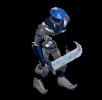 | 両手剣(360) | 杖(240) | 状態異常回復2(90) | 足(200) | 槍投擲機(180) | 腕刺青(140) | 鎌(360) | 本(240) | |
| ロックゴーレムEx | 神獣 | 一般4 | |||||||
 | 両手剣(300) | ステッキ(200) | 状態異常回復2(80) | 足(170) | 槍投擲機(150) | 腕刺青(150) | 鎌(300) | ||
| メタルゴーレムEx | 神獣 | セミ3 | |||||||
 | 両手剣(800) | スリング(530) | 状態異常回復2(200) | 足(440) | 槍投擲機(400) | 腕刺青(160) | 鎌(800) | ||
| ダイヤゴーレムEx | 神獣 | ボス1 | |||||||
 | 両手剣(1200) | 鈍器(800) | 状態異常回復2(300) | 足(670) | 冠(600) | 腕刺青(170) | 鎌(1200) | ||
| トーチリザードEx | 神獣 | 一般1 | |||||||
| 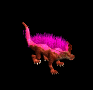 | 弓(410) | ステッキ(270) | 矢(410) | 足(230) | 冠(210) | 能力向上2(160) | 銃(410) | 魔弾(410) | |
| サラマンダEx | 神獣 | セミ1 | |||||||
| 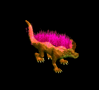 | 弓(450) | ステッキ(300) | 矢(450) | 足(250) | 冠(230) | 能力向上2(180) | 銃(450) | 魔弾(450) | |
| スルタンEx | 神獣 | ボス2 | |||||||
 | 弓(2000) | ステッキ(1330) | 矢(2000) | 足(1110) | 首(1000) | 能力向上2(800) | 銃(2000) | 魔弾(2000) | |
| 斧骸骨戦士Zin | アンデット | 一般1 | |||||||
| 両手剣(1210) | 鈍器(810) | 矢(1210) | 足(670) | 槍投擲機(610) | 帰還(480) | 鎌(1210) | 魔弾(1210) | |
| 攻撃骸骨戦士Zin | アンデット | 一般2 | |||||||
| 両手剣(1380) | ステッキ(920) | 盾(1380) | 足(770) | 槍投擲機(690) | 帰還(550) | 鎌(1380) | ||
| 骸骨狂戦士Zin | アンデット | 一般3 | |||||||
| 両手剣(1560) | 鈍器(1040) | 矢(1560) | 足(870) | 槍投擲機(780) | 帰還(620) | 鎌(1560) | 魔弾(1560) | |
| 死の斧Zin | アンデット | セミ1 | |||||||
| 両手剣(650) | ステッキ(430) | 盾(650) | 足(360) | 槍投擲機(330) | 帰還(260) | 鎌(650) | ||
| 地獄の斧Zin | アンデット | ボス1 | |||||||
| 両手剣(1000) | 鈍器(670) | 盾(1000) | 足(560) | 槍投擲機(500) | 帰還(400) | 鎌(1000) | ||
| グールZin | アンデット | 一般2 | |||||||
| 投擲(1380) | スリング(920) | イベント(1380) | 足(770) | 爪(690) | 帰還(550) | |||
| ルナティックZin | アンデット | 一般2 | |||||||
| スリング(1380) | ステッキ(920) | 弾(1380) | 足(770) | 首(690) | ブローチ(130) | |||
| アライブコープスZin | アンデット | ボス1 | |||||||
| スリング(1000) | ステッキ(670) | 鍵(130) | 足(560) | 首(500) | ブローチ(160) | ||||
| 原始人Zin | 人間 | 一般3 | |||||||
| 笛(1560) | 牙(1040) | 状態異常回復1(1560) | 足(870) | 槍投擲機(780) | 十字架(70) | 双剣(1040) | ||
| 呪術者Zin | 人間 | ボス1 | |||||||
| 笛(1000) | 牙(670) | 状態異常回復1(1000) | 足(560) | 槍投擲機(500) | 十字架(90) | 双剣(670) | ||
| オークZin | 人間 | 一般3 | |||||||
| 鈍器(1560) | 牙(1040) | 弾(1560) | 足(870) | 冠(780) | 帰還(620) | 双剣(1040) | |||
| ジャイアントZin | 人間 | セミ1 | |||||||
| 鈍器(650) | 牙(430) | HP回復(650) | 足(360) | 首(330) | 能力向上1(260) | 双剣(430) | ||
| キクロップスZin | 人間 | セミ1 | |||||||
| スリング(650) | 杖(430) | 弾(650) | 足(360) | 爪(330) | 帰還(260) | 本(430) | ||
| コロッサスZin | 人間 | ボス1 | |||||||
| 鈍器(1000) | 牙(670) | HP回復(1000) | 足(560) | 指輪(500) | 能力向上1(400) | 双剣(670) | ||
| チタンZin | 人間 | ボス1 | |||||||
| スリング(1000) | 杖(670) | 弾(1000) | 足(560) | 冠(500) | 帰還(400) | 本(670) | ||
| ラットマンZin | 悪魔 | 一般1 | |||||||
| 投擲(1210) | 笛(810) | 弾(1210) | 足(670) | 指輪(610) | 帰還(480) | |||
| ワーラットZin | 悪魔 | 一般2 | |||||||
| 投擲(1380) | ステッキ(920) | 矢(1380) | 足(770) | 槍投擲機(690) | 帰還(550) | 魔弾(1380) | ||
| ラティアンZin | 悪魔 | 一般3 | |||||||
| 投擲(1560) | 笛(1040) | 弾(1560) | 足(870) | 手首(780) | 帰還(620) | |||
| ラットシーフZin | 悪魔 | 一般4 | |||||||
| 投擲(1200) | ステッキ(800) | 矢(1200) | 足(670) | 槍投擲機(600) | 能力向上2(480) | 魔弾(1200) | ||
| ラットキングZin | 悪魔 | ボス1 | |||||||
| 投擲(1000) | 笛(670) | 弾(1000) | 足(560) | 冠(500) | 能力向上1(400) | |||
| バフォメットZin | 悪魔 | ボス3 | |||||||
| 槍(1200) | 鞭(800) | cP回復(1200) | 足(670) | 槍投擲機(600) | 特殊1(480) | 箒(1200) | |||
| ストーンオブザーZin | 悪魔 | セミ2 | |||||||
| none(750) | 弓(500) | 矢(750) | 足(420) | 冠(380) | 特殊1(300) | 銃(500) | 魔弾(750) | |
| ストーンキーパーZin | 悪魔 | ボス2 | |||||||
 | none(1100) | 片手剣(730) | 鍵(1100) | 足(610) | 爪(550) | 宝石(440) | クロー(730) | ||
| クラブシェルZin | 動物 | 一般1 | |||||||
| 投擲(1210) | 両手剣(810) | 盾(1210) | 足(670) | 爪(610) | 帰還(480) | 鎌(810) | ||
| ビッグクラブZin | 動物 | 一般2 | |||||||
| 投擲(1380) | 両手剣(920) | 状態異常回復1(1380) | 足(770) | 指輪(690) | 能力向上2(550) | 鎌(920) | ||
| サイドウォーカーZin | 動物 | 一般3 | |||||||
| 投擲(1560) | 両手剣(1040) | 盾(1560) | 足(870) | 爪(780) | 宝石(620) | 鎌(1040) | ||
| キングクラブZin | 動物 | セミ1 | |||||||
| 投擲(650) | 両手剣(430) | 状態異常回復1(650) | 足(360) | 指輪(330) | 帰還(260) | 鎌(430) | ||
| 殺人蚊の群れZin | 動物 | 一般3 | |||||||
| 笛(1560) | 翼(1040) | イベント(1560) | 足(870) | イヤリング(780) | 帰還(620) | 水晶(1040) | ||
| ダイアーウルフZin | 動物 | セミ2 | |||||||
| 牙(750) | 鈍器(500) | cP回復(750) | 足(420) | 槍投擲機(380) | 特殊1(300) | 双剣(750) | ||
| ブラウンベアーZin | 動物 | 一般4 | |||||||
| 牙(1200) | 笛(800) | HP回復(1200) | 足(670) | 爪(600) | 宝石(480) | 双剣(1200) | ||
| ゴーレムZin | 神獣 | 一般2 | |||||||
| 両手剣(1380) | 杖(920) | 状態異常回復2(350) | 足(770) | 爪(690) | 腕刺青(130) | 鎌(1380) | 本(920) | |
| クレイゴーレムZin | 神獣 | 一般3 | |||||||
| 両手剣(1560) | 杖(1040) | 状態異常回復2(390) | 足(870) | 槍投擲機(780) | 腕刺青(140) | 鎌(1560) | 本(1040) | ||
| ロックゴーレムZin | 神獣 | 一般4 | |||||||
| 両手剣(1200) | ステッキ(800) | 状態異常回復2(300) | 足(670) | 槍投擲機(600) | 腕刺青(150) | 鎌(1200) | ||
| メタルゴーレムZin | 神獣 | セミ3 | |||||||
| 両手剣(900) | スリング(600) | 状態異常回復2(230) | 足(500) | 槍投擲機(450) | 腕刺青(160) | 鎌(900) | ||
| ダイヤゴーレムZin | 神獣 | ボス1 | |||||||
| 両手剣(1000) | 鈍器(670) | 状態異常回復2(250) | 足(560) | 冠(500) | 腕刺青(170) | 鎌(1000) | ||
| トーチリザードZin | 神獣 | 一般1 | |||||||
| 弓(1210) | ステッキ(810) | 矢(1210) | 足(670) | 冠(610) | 能力向上2(480) | 銃(1210) | 魔弾(1210) | ||
| サラマンダZin | 神獣 | セミ1 | |||||||
| 弓(650) | ステッキ(430) | 矢(650) | 足(360) | 冠(330) | 能力向上2(260) | 銃(650) | 魔弾(650) | ||
| スルタンZin | 神獣 | ボス2 | |||||||
| 弓(1100) | ステッキ(730) | 矢(1100) | 足(610) | 首(550) | 能力向上2(440) | 銃(1100) | 魔弾(1100) | |
 | 弓(1560) | 片手剣(1040) | 矢(1560) | グローブ(900) | 手首(780) | 腕刺青(170) | クロー(1040) | 銃(1560) | 魔弾(1560) |
| ハイエルフ Zin | 人間 | 一般4 | |||||||
 | 片手剣(50) | ブローチ(150) | 足(100) | 能力向上1(80) | 両手剣(20) | 兜・帽子(30) | 鎌(20) | クロー(50) | |
| ハイエルフ3 Zin | 人間 | ボス1 | |||||||
 | 片手剣(250) | イヤリング(750) | 足(500) | 槍(400) | 状態異常回復1(100) | 杖(150) | クロー(250) | 本(150) | 箒(400) |
| エルフ貴族 Zin | 人間 | 一般4 | |||||||
| 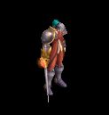 | 能力向上2(50) | イヤリング(150) | 足(100) | cP回復(80) | 能力向上2(20) | HP回復(30) | |||
| エルフ貴族2 Zin | 人間 | セミ3 | |||||||
 | 宝石(180) | イヤリング(530) | 足(350) | 職業鎧(280) | 槍投擲機(70) | 宝石(110) | |||
| エルフ貴族3 Zin | 人間 | ボス2 | |||||||
 | 片手剣(450) | ブローチ(1350) | 足(900) | 槍(720) | 槍投擲機(180) | 兜・帽子(270) | クロー(450) | 箒(720) | |
| エルフガーディア Zin | 人間 | セミ1 | |||||||
 | 片手剣(90) | 状態異常回復2(260) | 足(180) | 十字架(140) | 槍投擲機(40) | cP回復(50) | クロー(90) | ||
| エルフガーディア2 Zin | 人間 | ボス1 | |||||||
 | 鍵(250) | イヤリング(750) | 足(500) | 槍(400) | 槍投擲機(100) | 兜・帽子(150) | 箒(400) | ||
| エルフガーディア4 Zin | 人間 | ボス3 | |||||||
 | 片手剣(600) | イヤリング(1800) | 足(1200) | cP回復(960) | 槍投擲機(240) | 兜・帽子(360) | クロー(600) | ||
| 魔女 Zin | 悪魔 | 一般3 | |||||||
 | 鎧(170) | イヤリング(210) | 足(90) | 十字架(50) | ステッキ(30) | 盾(10) | |||
| 魔女3 Zin | 悪魔 | ボス2 | |||||||
| 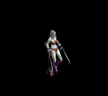 | 鎧(1170) | イヤリング(1440) | 足(590) | 十字架(360) | ステッキ(180) | 盾(90) | |||
| サキュバス1 Zin | 悪魔 | セミ1 | |||||||
 | 鎧(230) | イヤリング(280) | 足(120) | 能力向上1(70) | ステッキ(40) | 盾(20) | |||
| サキュバス3 Zin | 悪魔 | ボス2 | |||||||
 | 鎧(1170) | 状態異常回復2(1440) | 足(590) | 笛(360) | ステッキ(180) | cP回復(90) | |||
| パンタズドリーム Zin | 悪魔 | セミ1 | |||||||
 | 鎧(230) | ブローチ(280) | 足(120) | 笛(70) | ステッキ(40) | 杖(20) | 本(20) | ||
| パンタズドリーム2 Zin | 悪魔 | セミ3 | |||||||
| 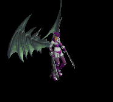 | 鎧(460) | イヤリング(560) | 足(230) | 笛(140) | 状態異常回復1(70) | イベント(40) | |||
| パンタズドリーム4 Zin | 悪魔 | ボス3 | |||||||
 | 鎧(1560) | イヤリング(1920) | 足(790) | 笛(480) | 状態異常回復1(240) | 盾(120) | |||
| パンプキンヘッド4 Zin | 悪魔 | ボス2 | |||||||
 | 指輪(1170) | 首(1440) | 足(590) | 笛(360) | 腰(180) | グローブ(90) | |||
| ジャックランタン Zin | 悪魔 | セミ1 | |||||||
 | 鍵(230) | 首(280) | 足(120) | 笛(70) | 状態異常回復1(40) | イベント(20) | |||
| ジャックランタン4 Zin | 悪魔 | ボス3 | |||||||
 | 指輪(1560) | 弾(1920) | 足(790) | マント(480) | 腰(240) | グローブ(120) | |||
| エルダーパンプキン1 Zin | 悪魔 | セミ3 | |||||||
 | 鍵(460) | 首(560) | 足(230) | 笛(140) | 状態異常回復1(70) | グローブ(40) | |||
| 蛙1 Zin | 動物 | セミ1 | |||||||
| 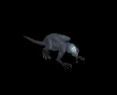 | 投擲(120) | 爪(90) | 足(70) | 槍(50) | 腕刺青(40) | HP回復(20) | 箒(50) | ||
| 蛙2 Zin | 動物 | セミ3 | |||||||
 | 投擲(250) | 状態異常回復2(180) | 足(140) | 鎧(110) | 槍投擲機(70) | 杖(40) | 本(40) | ||
| 蛙4 Zin | 動物 | ボス3 | |||||||
 | 投擲(840) | 爪(600) | 足(480) | 槍(360) | 槍投擲機(240) | 杖(120) | 本(120) | 箒(360) | |
| ラジエータカエル1 Zin | 動物 | セミ2 | |||||||
 | 鍵(190) | 爪(140) | 足(110) | 槍(80) | 槍投擲機(60) | 杖(30) | 本(30) | 箒(80) | |
| ラジエータカエル3 Zin | 動物 | ボス2 | |||||||
 | 投擲(630) | ブローチ(450) | 足(360) | 槍(270) | 槍投擲機(180) | 杖(90) | 本(90) | 箒(270) | |
| ハリネズミカエル1 Zin | 動物 | セミ2 | |||||||
 | 鍵(190) | 爪(140) | 足(110) | 槍(80) | 槍投擲機(60) | HP回復(30) | 箒(80) | ||
| ハリネズミカエル2 Zin | 動物 | セミ3 | |||||||
 | 投擲(250) | 爪(180) | 足(140) | 槍(110) | 肩刺青(70) | 杖(40) | 本(40) | 箒(110) | |
| ハリネズミカエル3 Zin | 動物 | ボス2 | |||||||
 | 両手剣(630) | 状態異常回復2(450) | 足(360) | 槍(270) | 槍投擲機(180) | cP回復(90) | 鎌(630) | 箒(270) | |
| 堕天使1 Zin | 神獣 | セミ1 | |||||||
 | 鍵(160) | イヤリング(230) | 足(120) | 手首(20) | ステッキ(40) | グローブ(90) | |||
| 堕天使2 Zin | 神獣 | セミ3 | |||||||
 | 投擲(320) | イヤリング(460) | 足(250) | 手首(40) | cP回復(70) | グローブ(180) | |||
| 堕天使4 Zin | 神獣 | ボス3 | |||||||
 | 投擲(1080) | イヤリング(1560) | 足(840) | 手首(120) | ステッキ(240) | グローブ(600) | |||
| イーグルヘッド Zin | 神獣 | 一般4 | |||||||
 | 投擲(90) | 弾(130) | 足(70) | 手首(10) | ステッキ(20) | 宝石(50) | |||
| イーグルヘッド2 Zin | 神獣 | セミ3 | |||||||
 | 鍵(320) | イヤリング(460) | 足(250) | 手首(40) | ステッキ(70) | HP回復(180) | |||
| イーグルヘッド3 Zin | 神獣 | ボス2 | |||||||
 | 投擲(810) | イヤリング(1170) | 足(630) | 鞭(90) | 能力向上2(180) | グローブ(450) | |||
| イーグルヘッド4 Zin | 神獣 | ボス3 | |||||||
 | 鍵(1080) | イヤリング(1560) | 足(840) | 手首(120) | ステッキ(240) | グローブ(600) | |||
| ライオンヘッド1 Zin | 神獣 | セミ2 | |||||||
| 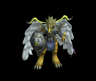 | 投擲(250) | イヤリング(360) | 足(190) | 手首(30) | ステッキ(60) | グローブ(140) | |||
| ライオンヘッド3 Zin | 神獣 | ボス1 | |||||||
 | 投擲(450) | 状態異常回復2(650) | 足(350) | 能力向上1(50) | ステッキ(100) | HP回復(250) | |||
| ライオンヘッド4 Zin | 神獣 | ボス3 | |||||||
 | 鍵(1080) | イヤリング(1560) | 足(840) | 手首(120) | cP回復(240) | グローブ(600) | |||
| 蚊の大群 | 動物 | 一般3 | |||||||
| 笛(360) | 翼(240) | イベント(360) | 足(200) | イヤリング(180) | 帰還(140) | 水晶(240) | ||
| 蚊の大群 Ex | 動物 | 一般3 | |||||||
| 笛(360) | 翼(240) | イベント(360) | 足(200) | イヤリング(180) | 帰還(140) | 水晶(240) | ||
| ベイシャゴーレム Ex | 神獣 | 一般2 | |||||||
| 両手剣(380) | 杖(250) | 状態異常回復2(100) | 足(210) | 爪(190) | 腕刺青(130) | 鎌(380) | 本(250) | |
| 泥ゴーレム Ex | 神獣 | 一般3 | |||||||
| 両手剣(360) | 杖(240) | 状態異常回復2(90) | 足(200) | 槍投擲機(180) | 腕刺青(140) | 鎌(360) | 本(240) | ||
| 石ゴーレム Ex | 神獣 | 一般4 | |||||||
| 両手剣(300) | ステッキ(200) | 状態異常回復2(80) | 足(170) | 槍投擲機(150) | 腕刺青(150) | 鎌(300) | ||
| 金属ゴーレム Ex | 神獣 | セミ3 | |||||||
| 両手剣(800) | スリング(530) | 状態異常回復2(200) | 足(440) | 槍投擲機(400) | 腕刺青(160) | 鎌(800) | ||
| 金剛石ゴーレム Ex | 神獣 | ボス1 | |||||||
| 両手剣(1200) | 鈍器(800) | 状態異常回復2(300) | 足(670) | 冠(600) | 腕刺青(170) | 鎌(1200) | ||
| バフォメット | 悪魔 | ボス3 | |||||||
| 槍(510) | 鞭(340) | cP回復(510) | 足(280) | 槍投擲機(260) | 特殊1(200) | 箒(510) | |||
| バフォメット Ex | 悪魔 | ボス3 | |||||||
| 槍(2800) | 鞭(1870) | cP回復(2800) | 足(1560) | 槍投擲機(1400) | 特殊1(1120) | 箒(2800) | |||
| ハイエルフ Zin | 人間 | 一般4 | |||||||
| 片手剣(50) | ブローチ(150) | 足(100) | 能力向上1(80) | 両手剣(20) | 兜・帽子(30) | 鎌(20) | クロー(50) | |
| グリフォン Zin | 神獣 | 一般4 | |||||||
| 投擲(90) | 弾(130) | 足(70) | 手首(10) | ステッキ(20) | 宝石(50) | |||
| モリネル守護神 | 神獣 | ボス1 | |||||||
| 両手剣(1000) | 鈍器(670) | 状態異常回復2(250) | 足(560) | 冠(500) | 腕刺青(170) | 鎌(1000) | ||
| ハイエルフ Zin | 人間 | 一般4 | |||||||
| 片手剣(50) | ブローチ(150) | 足(100) | 能力向上1(80) | 両手剣(20) | 兜・帽子(30) | 鎌(20) | クロー(50) | |
| グリフォン Zin | 神獣 | 一般4 | |||||||
| 投擲(90) | 弾(130) | 足(70) | 手首(10) | ステッキ(20) | 宝石(50) | |||
| フィクサー Zin | 悪魔 | ボス3 | |||||||
| 鎧(1560) | イヤリング(1920) | 足(790) | 笛(480) | 状態異常回復1(240) | 盾(120) | |||
| 巨人骸骨Ev | 人間 | 一般3 | |||||||
| 鈍器(1560) | 牙(1040) | 弾(1560) | 足(870) | 冠(780) | 帰還(620) | 双剣(1040) | |||
| クレイゴーレムEv | 神獣 | 一般3 | |||||||
| 両手剣(1560) | 杖(1040) | 状態異常回復2(390) | 足(870) | 槍投擲機(780) | 腕刺青(140) | 鎌(1560) | 本(1040) | ||
| 原始人Ev | 人間 | 一般3 | |||||||
| 笛(1560) | 牙(1040) | 状態異常回復1(1560) | 足(870) | 槍投擲機(780) | 十字架(70) | 双剣(1040) | ||
| 骸骨狂戦士Ev | アンデット | 一般3 | |||||||
| 両手剣(1560) | 鈍器(1040) | 矢(1560) | 足(870) | 槍投擲機(780) | 帰還(620) | 鎌(1560) | 魔弾(1560) | |
| サイドウォーカーEv | 動物 | 一般3 | |||||||
| 投擲(1560) | 両手剣(1040) | 盾(1560) | 足(870) | 爪(780) | 宝石(620) | 鎌(1040) | ||
| ラティアンEv | 悪魔 | 一般3 | |||||||
| 投擲(1560) | 笛(1040) | 弾(1560) | 足(870) | 手首(780) | 帰還(620) | |||
| 殺人蚊の群れEv | 動物 | 一般3 | |||||||
| 笛(1560) | 翼(1040) | イベント(1560) | 足(870) | イヤリング(780) | 帰還(620) | 水晶(1040) | ||
| ラットシーフEv | 悪魔 | 一般4 | |||||||
| 投擲(1200) | ステッキ(800) | 矢(1200) | 足(670) | 槍投擲機(600) | 能力向上2(480) | 魔弾(1200) | ||
| ブラウンベアーEv | 動物 | 一般4 | |||||||
| 牙(1200) | 笛(800) | HP回復(1200) | 足(670) | 爪(600) | 宝石(480) | 双剣(1200) | ||
| ロックゴーレムEv | 神獣 | 一般4 | |||||||
| 両手剣(1200) | ステッキ(800) | 状態異常回復2(300) | 足(670) | 槍投擲機(600) | 腕刺青(150) | 鎌(1200) | ||
| キクロップスEv | 人間 | セミ1 | |||||||
| スリング(650) | 杖(430) | 弾(650) | 足(360) | 爪(330) | 帰還(260) | 本(430) | ||
| メタルゴーレムEv | 神獣 | セミ3 | |||||||
| 両手剣(900) | スリング(600) | 状態異常回復2(230) | 足(500) | 槍投擲機(450) | 腕刺青(160) | 鎌(900) | ||
| バフォメットEv | 悪魔 | ボス3 | |||||||
| 槍(1200) | 鞭(800) | cP回復(1200) | 足(670) | 槍投擲機(600) | 特殊1(480) | 箒(1200) | |||
| 斧骸骨戦士Sp | アンデット | 一般4 | |||||||
| 両手剣(1200) | 鈍器(800) | 矢(1200) | 足(700) | 槍投擲機(600) | 帰還(500) | 鎌(1200) | 魔弾(1200) | |
| ラジエータカエル1 Sp | 動物 | 一般4 | |||||||
 | 鍵(200) | 爪(500) | 足(700) | 槍(1100) | 槍投擲機(600) | 杖(800) | 本(1100) | 箒(1100) | |
| ハイエルフ Sp | 人間 | 一般4 | |||||||
| 片手剣(50) | ブローチ(150) | 足(100) | 能力向上1(80) | 両手剣(20) | 兜・帽子(30) | 鎌(20) | クロー(50) |